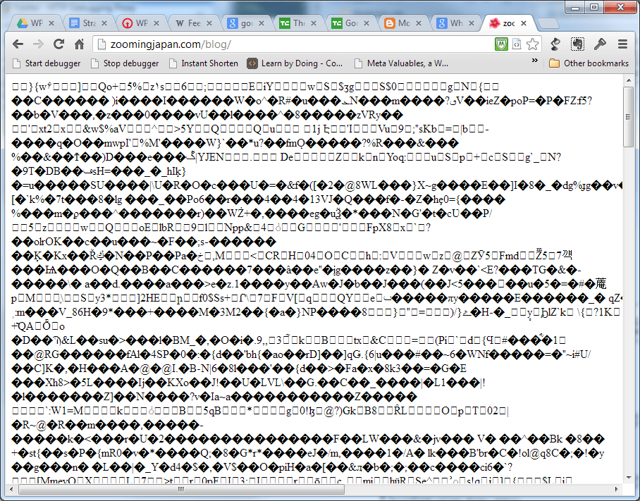
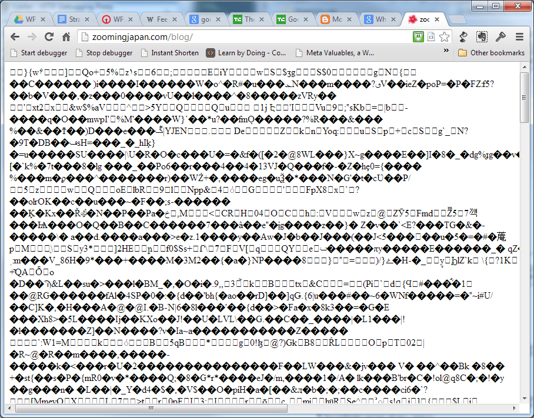
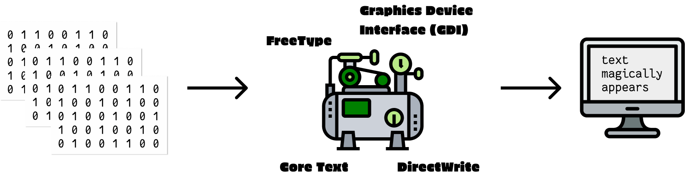
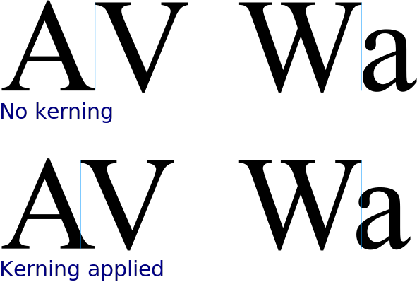
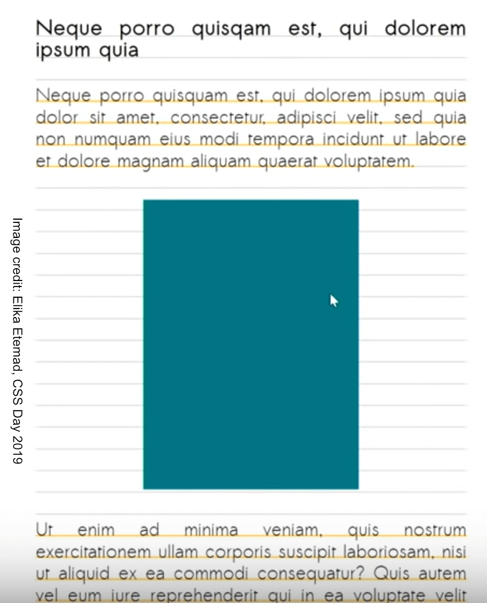

East Asian typography on the modern web 网络时代的汉字排版
By Chen Hui Jing / @hj_chen

Overview
- Recognising the characters
- Displaying the characters
- Laying out the characters
Character encoding
Encoding incompatibility


 

Declaring character encodings for the web
<!doctype html>
<html lang="en">
<head>
<meta charset="utf-8"/>
...@charset "utf-8";
/* all the styles for your web page */Text rendering on electronic screens
Bitmap fonts
PostScript
The Font Wars by Typography.Guru
https://youtu.be/5X9Dj7tBlkg
Font formats for web use
| WOFF2 (Web Open Font Format 2) |


|
| WOFF (Web Open Font Format) |
|
| OTF (OpenType) |

|
| TTF (TrueType) |
|
| EOT (Embedded Open Type) |
|
| SVG (Scalable Vector Graphics) |
Chinese typeface design
Web fonts
Font stacks
/* This text is in Lucida Grande */
.sans {
font-family: Lucida Grande,Lucida Sans Unicode,Lucida Sans,Geneva,Verdana,sans-serif;
}
/* A typical Chinese font stack, declare Latin fonts first */
.zh-hans {
font-family: Tahoma, Helvetica, Arial, "Microsoft Yahei", "微软雅黑", STXihei, "华文细黑", sans-serif;
}Subset fail


@font-face rule
@font-face {
font-family: 'Bellato';
src: url('Bellota-Regular.woff2') format('woff2'),
url('Bellota-Regular.woff') format('woff');
}

Anatomy of an @font-face rule
@font-face {
font-family: <family-name>;
src: [ <url> [format(<string> #)]? | <font-face-name> ] #;
font-style: normal | italic | oblique ;
font-weight: normal | bold | 100 | 200 | 300 | 400 | 500 | 600 | 700 | 800 | 900;
font-stretch: normal | ultra-condensed | extra-condensed | condensed | semi-condensed | semi-expanded | expanded | extra-expanded | ultra-expanded;
unicode-range: <urange> #;
font-variant: normal | none | [ <common-lig-values> || <discretionary-lig-values> || <historical-lig-values> || <contextual-alt-values> || stylistic(<feature-value-name>) || historical-forms || styleset(<feature-value-name> #) || character-variant(<feature-value-name> #) || swash(<feature-value-name>) || ornaments(<feature-value-name>) || annotation(<feature-value-name>) || [ small-caps | all-small-caps | petite-caps | all-petite-caps | unicase | titling-caps ] || <numeric-figure-values> || <numeric-spacing-values> || <numeric-fraction-values> || ordinal || slashed-zero || <east-asian-variant-values> || <east-asian-width-values> || ruby ];
font-feature-settings: normal | <feature-tag-value> #;
}Slides for This world mixed and blended by Gao Wei.


@font-face {
font-family: 'Raleway';
src: url('fonts/raleway-regular.woff2') format('woff2'),
url('fonts/raleway-regular.woff') format('woff');
/* no range specified, defaults to entire range */
}
@font-face {
font-family: 'Raleway';
src: url('fonts/comfortaa_regular.woff2') format('woff2'),
url('fonts/comfortaa_regular.woff') format('woff');
unicode-range: U+0400–U+04FF; /* Unicode range for Cyrillic characters */
}Source Hans Serif (65,535 glyphs)
Subsetting web fonts


Variable fonts
Dragons
Progressive Font Enrichment
to enable the ability for only the required part of the font be downloaded on any given page, and for subsequent requests for that font to dynamically ‘patch’ the original download with additional sets of glyphs as required on successive page views—even if they occur on separate sites
—Jason Pamental on Web Fonts & Typography News #11
Incremental Transfer Demo
https://rwt.io/newsletter
Typesetting on the web
Authors should language-tag their content accurately for the best typographic behaviour.
—CSS Text Module Level 3
OpenType features
- aalt
- abvf
- abvm
- abvs
- afrc
- akhn
- blwf
- blwm
- blws
- calt
- case
- ccmp
- cfar
- cjct
- clig
- cpct
- cpsp
- cswh
- curs
- cv01 – cv99
- c2pc
- c2sc
- dist
- dlig
- dnom
- dtls
- expt
- falt
- fin2
- fin3
- fina
- flac
- frac
- fwid
- half
- haln
- halt
- hist
- hkna
- hlig
- hngl
- hojo
- hwid
- init
- isol
- ital
- jalt
- jp78
- jp83
- jp90
- jp04
- kern
- lfbd
- liga
- ljmo
- lnum
- locl
- ltra
- ltrm
- mark
- med2
- medi
- mgrk
- mkmk
- mset
- nalt
- nlck
- nukt
- numr
- onum
- opbd
- ordn
- ornm
- palt
- pcap
- pkna
- pnum
- pref
- pres
- pstf
- psts
- pwid
- qwid
- rand
- rclt
- rkrf
- rlig
- rphf
- rtbd
- rtla
- rtlm
- ruby
- rvrn
- salt
- sinf
- size
- smcp
- smpl
- ss01
- ss02
- ss03
- ss04
- ss05
- ss06
- ss07
- ss08
- ss09
- ss10
- ss11
- ss12
- ss13
- ss14
- ss15
- ss16
- ss17
- ss18
- ss19
- ss20
- ssty
- stch
- subs
- sups
- swsh
- titl
- tjmo
- tnam
- tnum
- trad
- twid
- unic
- valt
- vatu
- vert
- vhal
- vjmo
- vkna
- vkrn
- vpal
- vrt2
- vrtr
- zero
Font feature properties
font-kerning

|
font-variant-position

|
font-variant-position-ligatures

|
font-variant-numeric

|
font-variant-caps

|
font-variant-alternates

|
Font metrics are crucial
font-variant-east-asian
Allows control of glyph substitution and sizing in East Asian text
一个简体字可能对应多个繁体字，如简体字「发」，其相应的繁体字可能为「發」或「髮」；一个繁体汉字对应多个简体汉字的情况与前者相比数量极少但仍需注意，如繁体字「乾」可能对应简体字「干」或「乾」。繁简汉字的对应关系具体应由上下文决定。
唖 芦 溢 茨 鰯 嘘 欝 厩 噂
font-language-override
To control the use of language-specific glyph substitutions and positioning
<!-- Macedonian lang code -->
<body lang="mk">
<h4>Члeн 9</h4>
<p>Никoj чoвeк нeмa дa бидe пoдлoжeн нa прoизвoлнo aпсeњe, притвoр или прoгoнувaњe.</p>
</body>body {
/* Serbian OpenType language tag */
font-language-override: "SRB";
}Example lifted from CSS Fonts Module Level 4
The text-transform property
If I want [flowers], I’m going to send them to myself.
Süße Soßen-Klöße genießen maßgeblich gefräßige preußische Nutznießer.
Ουδέν κακόν αμιγές καλού.
ァィゥェ ォヵㇰヶ
The text-emphasis property
We use italics to emphasise words in English, 但是中文则是用着重号.
We use italics to emphasise words in English, 但是中文则是用着重号.
text-align & text-justify
- Sets the
text-align-allandtext-align-lastproperties - Describes how the inline-level content of a block is aligned along the inline axis if the content does not completely fill the line box.
text-align: start | end | left | right | center | justify | match-parent | justify-allValues other than justify-all or match-parent are assigned to text-align-all and reset text-align-last to auto.
Selects the justification method used when a line’s alignment is set to justify
text-justify: auto | none | inter-word | inter-characterText alignment and justification
定义了CSS如何支持各种不同国际化语言的书写模式，例如拉丁（Latin）语系及印度（Indic）语系采用从左到右的书写模式，希尔伯特语（Hebrew）或阿拉伯语（Arabic）采用从右到左的书写模式，一些混合了拉丁语和阿拉伯语的文字可能采用双向书写（bidirectional），而一些东亚文字则需要竖排（从上到下）的书写模式。
Vertical text on the web
CSS Writing Modes Level 3 defines CSS features to support for various international writing modes, such as left-to-right (e.g. Latin or Indic), right-to-left (e.g. Hebrew or Arabic), bidirectional (e.g. mixed Latin and Arabic) and vertical (e.g. Asian scripts).
writing-mode property
| horizontal-tb | 从1987到现在 |
| vertical-rl | 从1987到现在 |
| vertical-lr | 从1987到现在 |
| sideways-rl* | 从1987到现在 |
| sideways-lr* | 从1987到现在 |
text-orientation property
text-combine-upright property
Not just for East Asian text
Magie
“Zwei Dinge sind unendlich, das Universum und die menschliche Dummheit, aber bei dem Universum bin ich mir noch nicht ganz sicher.”
Es liegt der heiße Sommer
Auf deinen Wängelein;
Es liegt der Winter, der kalte,
In deinem Herzchen klein.
Das wird sich bei dir ändern,
Du Vielgeliebte mein!
Der Winter wird auf den Wangen,
Der Sommer im Herzen sein.
Das Leben ist kein Ponyhof
Everything is a box on the web

Line breaks in inline boxes
If an element generates zero boxes, was it really there at all?
If an element generates zero boxes, was it really there at all?
CSS for controlling line breaks
line-break |
allows choosing various levels of “strictness” for line breaking restrictions |
word-break |
controls what types of letters are glommed together to form unbreakable “words”, causing CJK characters to behave like non-CJK text or vice versa |
hyphens |
controls whether automatic hyphenation is allowed to break words in scripts that hyphenate |
overflow-wrap |
allows the UA to take a break anywhere in otherwise-unbreakable strings that would otherwise overflow |
Line breaking by Florian Rivoal @ dotCSS
Future improvements to web typography
The leading problem

The interruption problem
CSS Line Layout and Vertical Rhythm
Imagine an alternate history…
References
- Lunde, K. (2009). CJVK Information Processing. Beijing: O’Reilly
- Haralambous, Y. (2007). Fonts & Encodings. Beijing: O’Reilly
- Gillam, R. (2003). Unicode demystified: a practical programmers guide to the encoding standard. Boston, MA: Addison-Wesley.
- Dyson, M. C., & Suen, C. Y. (2016). Digital fonts and reading. New Jersey: World Scientific.
- The Absolute Minimum Every Software Developer Absolutely, Positively Must Know About Unicode and Character Sets (No Excuses!)
- Choosing & applying a character encoding
- Fonts and Keyboards
- Type rendering on the web
- Mac內建字體的故事：柊野明朝與游明朝
- Font smoothing, anti-aliasing, and sub-pixel rendering
- Laissez-faire Font Smoothing and Anti-aliasing
- A Closer Look At Font Rendering